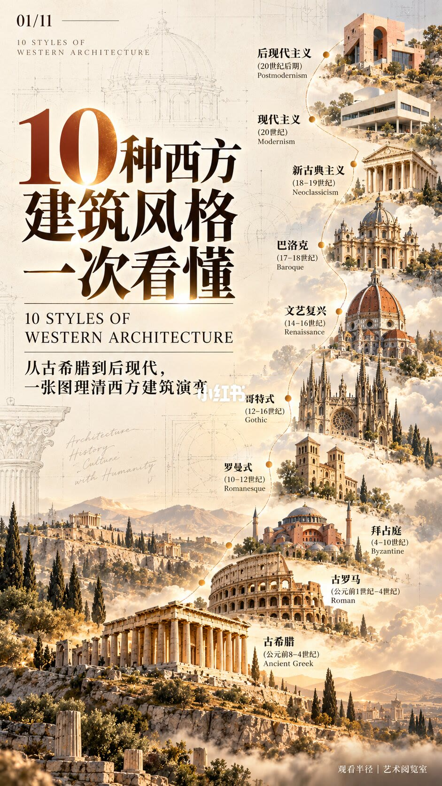
封面：十种风格先排成一条路
这一页是总目录。大标题是「10种西方建筑风格一次看懂」，英文 10 STYLES OF WESTERN ARCHITECTURE。副题写「从古希腊到后现代，一张图理清西方建筑演变」。背景能看到 Architecture History Culture with Humanity。右下署「观看半径 | 艺术阅览室」。页码 01/11。
路径由下往上，每站一个模型和一段年代：古希腊，公元前 8–4 世纪，山丘上的神庙；古罗马，公元前 1 世纪–4 世纪，斗兽场；拜占庭，4–10 世纪，中央大穹顶；罗曼式，10–12 世纪，厚重双塔；哥特式，12–16 世纪，密集尖塔；文艺复兴，14–16 世纪，带灯笼的大穹顶；巴洛克，17–18 世纪，曲线和繁复立面；新古典主义，18–19 世纪，山花加一排高柱；现代主义，20 世纪，白色平顶盒子；后现代主义，20 世纪后期，碎裂形体和对比色。封面只给顺序和年代，不解释认法。哥特式在这里写成 12–16 世纪，第 6 页写成 12–15 世纪，两页区间并不相同。
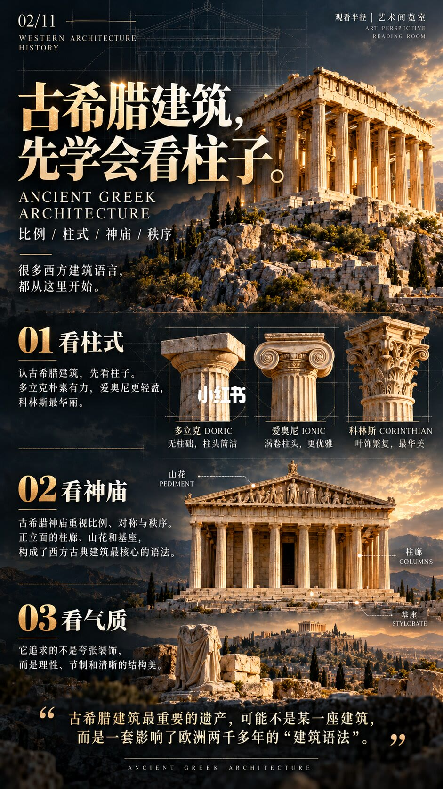
古希腊：先学会看柱子
页题是「古希腊建筑，先学会看柱子。」关键词是比例、柱式、神庙、秩序。开篇写「很多西方建筑语言，都从这里开始。」页码 02/11。
第一节「看柱式」：认古希腊建筑，先看柱子。多立克朴素有力，无柱础，柱头简洁；爱奥尼更轻盈，涡卷柱头，更优雅；科林斯最华丽，叶饰繁复。三张柱头照片并排。第二节「看神庙」：神庙重视比例、对称与秩序。正立面的柱廊、山花和基座，被写成西方古典建筑最核心的语法。帕特农式立面上标着山花 PEDIMENT、柱廊 COLUMNS、基座 STYLOBATE。第三节「看气质」：它追求的不是夸张装饰，而是理性、节制和清晰的结构美。页底一句：「古希腊建筑最重要的遗产，可能不是某一座建筑，而是一套影响了欧洲两千多年的建筑语法。」
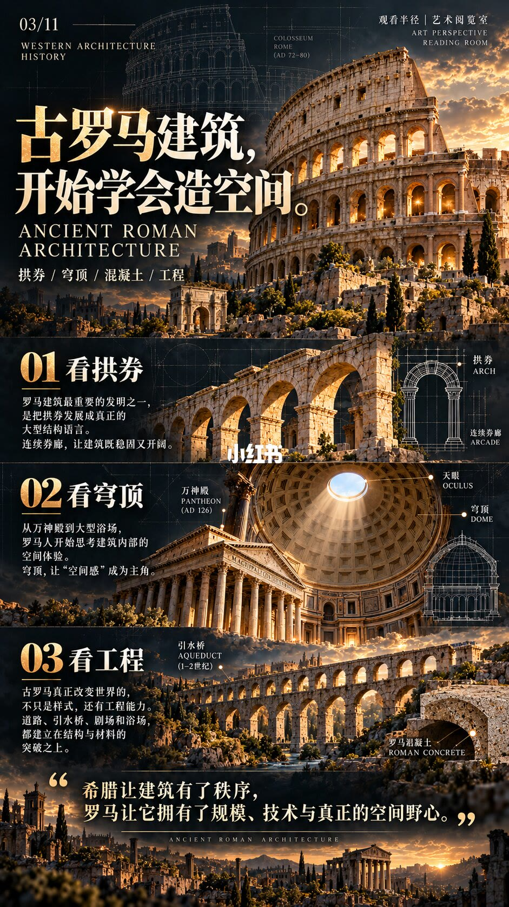
古罗马：开始学会造空间
页题是「古罗马建筑，开始学会造空间。」关键词是拱券、穹顶、混凝土、工程。页底对照前一页：「希腊让建筑有了秩序，罗马让它拥有了规模、技术与真正的空间野心。」页码 03/11。顶部是罗马斗兽场，标注 COLOSSEUM ROME, AD 72-80。
「看拱券」：把拱券发展成大型结构语言。连续券廊让建筑既稳固又开阔。图上标着拱券 ARCH、连续券廊 ARCADE。「看穹顶」：从万神殿到大型浴场，罗马人开始思考建筑内部的空间体验。穹顶让「空间感」成为主角。万神殿标 PANTHEON, AD 126，剖面标天眼 OCULUS 和穹顶 DOME。「看工程」：真正改变世界的不只是样式，还有工程能力。道路、引水桥、剧场和浴场，建立在结构与材料的突破之上。引水桥标 1–2 世纪，材料特写标罗马混凝土 ROMAN CONCRETE。
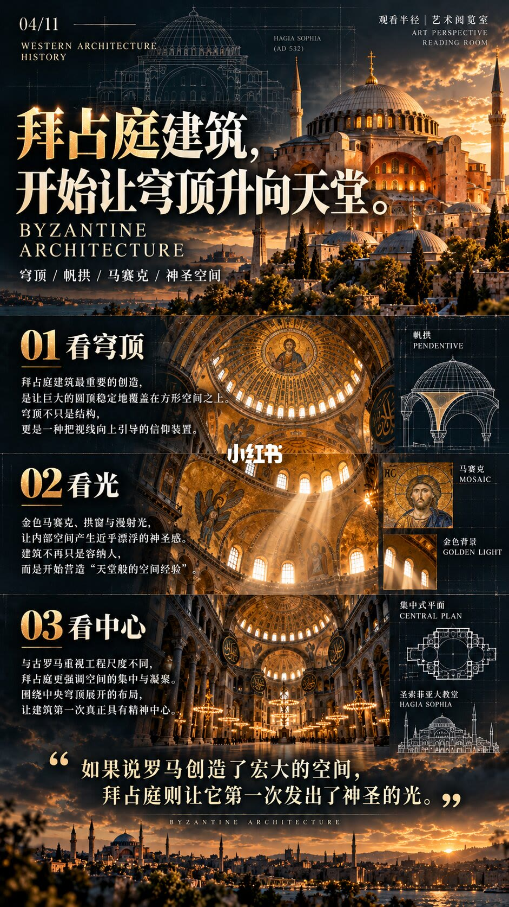
拜占庭：穹顶升向天堂
页题是「拜占庭建筑，开始让穹顶升向天堂。」关键词是穹顶、帆拱、马赛克、神圣空间。主图是圣索菲亚大教堂。页底写：「如果说罗马创造了宏大的空间，拜占庭则让它第一次发出了神圣的光。」页码 04/11。
「看穹顶」：最重要的创造，是让巨大的圆顶稳定地覆盖在方形空间之上。穹顶不只是结构，更是把视线向上引导的信仰装置。线框标着帆拱 PENDENTIVE，说明圆顶如何落在四个柱子围成的方形平面上。「看光」：金色马赛克、拱窗与漫射光，让内部产生近乎漂浮的神圣感。建筑不再只是容纳人，而是开始营造「天堂般的空间经验」。细节标马赛克 MOSAIC、金色背景 GOLDEN LIGHT。「看中心」：与古罗马重视工程尺度不同，拜占庭更强调空间的集中与凝聚。围绕中央穹顶的布局，让建筑具有精神中心。旁边有集中式平面 CENTRAL PLAN，以及圣索菲亚立面草图，标注公元 532 年。532 年落在封面给出的 4–10 世纪之内，但它是这座教堂的年份，不是整个拜占庭风格的起止。
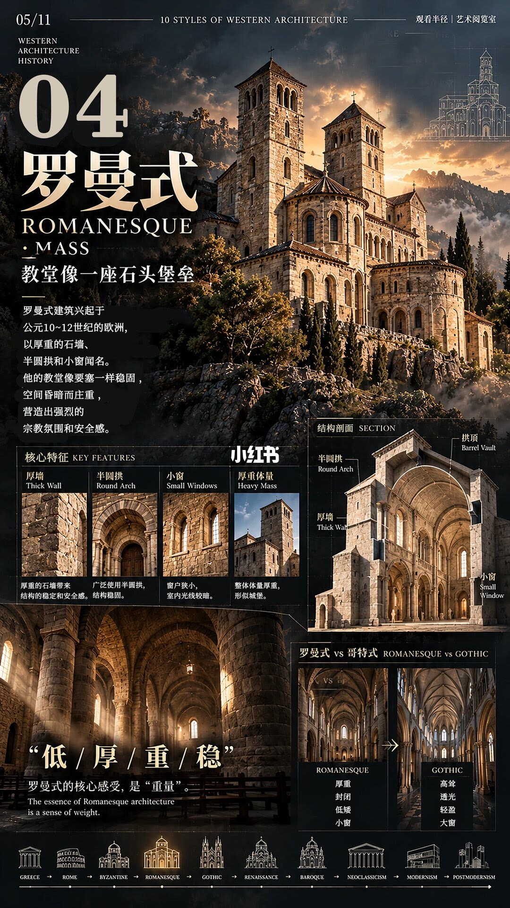
罗曼式：教堂像一座石头堡垒
这一页编号写成「04 罗曼式 ROMANESQUE · MASS」，口号是「教堂像一座石头堡垒」。正文：罗曼式建筑兴起于公元 10–12 世纪的欧洲，以厚重的石墙、半圆拱和小窗闻名。教堂像要塞一样稳固，空间昏暗而庄重，营造强烈的宗教氛围和安全感。页码 05/11。底部时间轴停在 ROMANESQUE。
四个核心特征：厚墙带来结构稳定和安全感；半圆拱结构稳固；小窗使室内光线较暗；厚重体量形似城堡。剖面标拱顶 Barrel Vault、半圆拱、厚墙、小窗。和哥特式并排：罗曼式是厚重、封闭、低矮、小窗；哥特式是高耸、透光、轻盈、大窗。收束口诀是「低 / 厚 / 重 / 稳」，并写「罗曼式的核心感受，是重量。」主图是山坡上带圆后殿和方形钟塔的石教堂，具体教堂中文名无法确认。
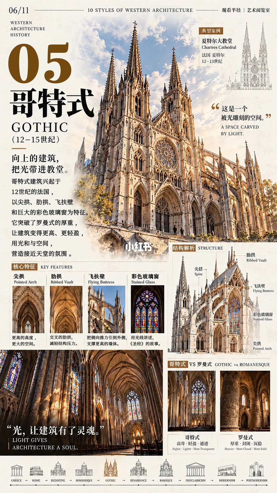
哥特式：向上，并把光带进来
编号是「05 哥特式 GOTHIC（12–15 世纪）」。导语：「向上的建筑，把光带进教堂。」哥特式兴起于 12 世纪的法国，以尖拱、肋拱、飞扶壁和巨大的彩色玻璃窗为特征。它突破罗曼式的厚重，让建筑更高、更轻盈，用光与空间营造接近天堂的氛围。典型案例是法国夏特尔大教堂，12–13 世纪。金句：「这是一个被光雕刻的空间。」页码 06/11。封面把哥特式写到 16 世纪，这一页停在 15 世纪，区间以哪一页为准，图上没有统一。
四个局部：尖拱，更高的高度、更大的空间；肋拱，交叉的肋拱减轻结构压力；飞扶壁，把侧向推力引到外侧，支撑更高的墙体；彩色玻璃窗，用光线讲述《圣经》的故事。剖面标尖塔、肋拱、飞扶壁、彩色玻璃窗、尖拱。内景配文「光，让建筑有了灵魂。」对照罗曼式：哥特式是高耸、轻盈、通透；罗曼式是厚重、封闭、沉稳。这一页的对比和第 5 页是同一对，只是形容词略有出入：第 5 页哥特一侧写「透光、大窗」，这里写「通透」。
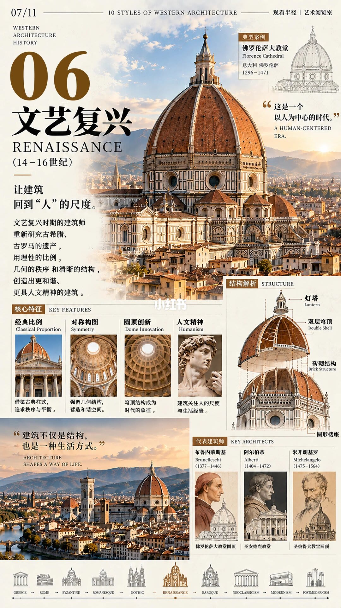
文艺复兴：让建筑回到人的尺度
编号「06 文艺复兴 RENAISSANCE（14–16 世纪）」。首句是「让建筑回到人的尺度。」建筑师重新研究古希腊、古罗马，用理性的比例、几何的秩序和清晰的结构，创造更和谐、更具人文精神的建筑。典型案例佛罗伦萨大教堂，意大利佛罗伦萨，1296–1471。引文：「这是一个以人为中心的时代。」另一句：「建筑不仅是结构，也是一种生活方式。」页码 07/11。
四个特征：经典比例，借鉴古典柱式，追求秩序与平衡；对称构图，强调几何结构；圆顶创新，穹顶成为时代象征；人文精神，建筑关注人的尺度与生活经验。穹顶剖面能确认灯塔 Lantern、双层穹顶 Double Shell、砖砌结构 Brick Structure。还有一项构件中文，画面描述读成「圆形楼座」，是否还有更细的名称无法确认。三位建筑师：布鲁内莱斯基（1377–1446），佛罗伦萨大教堂圆顶；阿尔伯蒂（1404–1472），圣安德烈教堂；米开朗基罗（1475–1564），圣彼得大教堂圆顶。1296 年早于本页写的 14 世纪起点，工期跨出了风格标签的左边界。
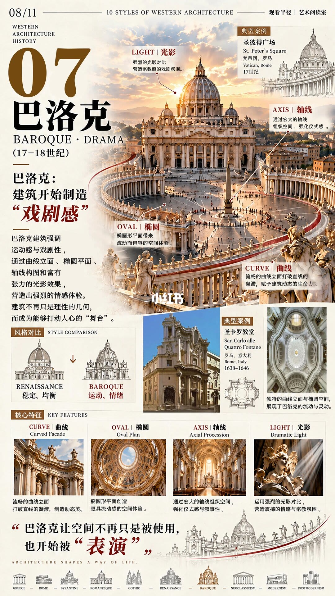
巴洛克：空间开始被表演
编号「07 巴洛克 BAROQUE · DRAMA（17–18 世纪）」。副题：「巴洛克：建筑开始制造戏剧感。」正文：强调运动感与戏剧性，通过曲线立面、椭圆平面、轴线构图和富有张力的光影，营造强烈的情感体验。建筑不再只是理性的几何，而成为能够打动人心的舞台。页底：「巴洛克让空间不再只是被使用，也开始被表演。」页码 08/11。
主图是 17 世纪的圣彼得广场，四条标注：光影，强烈对比营造宗教的戏剧氛围；轴线，用宏大轴线组织空间、强化仪式感；椭圆，椭圆形平面带来流动而包容的空间体验；曲线，流畅的曲线立面打破直线的凝滞。风格对比把文艺复兴收成「稳定、均衡」，把巴洛克收成「运动、情绪」。第二个例子是罗马圣卡罗教堂，1638–1646，曲线立面、复杂的椭圆平面和向上看的穹顶。核心特征把上面四个词再列一遍：曲线、椭圆、轴线、光影。这一页把「舞台」和「表演」当作比喻，不是说建筑变成了剧院类型。
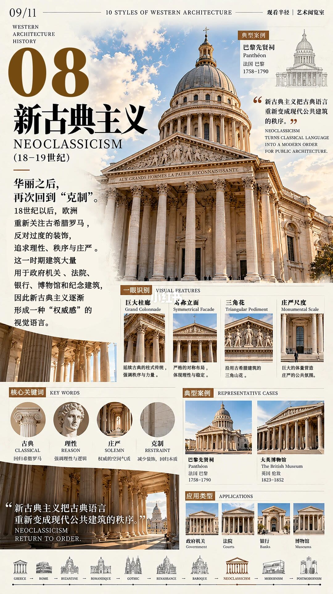
新古典主义：再次回到克制
编号「08 新古典主义 NEOCLASSICISM（18–19 世纪）」。导语：「华丽之后，再次回到克制。」18 世纪以后，欧洲重新关注古希腊罗马，反对过度的装饰，追求理性、秩序与庄严。建筑大量用于政府机关、法院、银行、博物馆和纪念建筑，因此逐渐形成一种「权威感」的视觉语言。引文：「新古典主义把古典语言重新变成现代公共建筑的秩序。」页码 09/11。导语没有点名前一种华丽风格的专名；是否出现「洛可可」三字，无法确认。
典型案例是巴黎先贤祠 Panthéon，1758–1790，画面是穹顶、科林斯式巨柱廊和三角山花。一眼识别四项：巨大柱廊，延续古典柱式，强调秩序与力量；对称立面，严格对称，体现理性与稳定；三角花，沿用古希腊的三角山花；庄严尺度，用巨大体量营造公共氛围，配图是高大门洞下的人影。四个关键词：古典，回归希腊罗马；理性；庄严，权威的空间气质；克制，减少装饰、回归本质。第二个案例是伦敦大英博物馆，1823–1852。应用场景图标是政府机关、法院、银行、博物馆。底部另有英文 NEOCLASSICISM RETURN TO ORDER。先贤祠的完工年落在 18 世纪，大英博物馆已经进入 19 世纪，和本页的世纪标签一致，但两座建筑差了大约七十年。
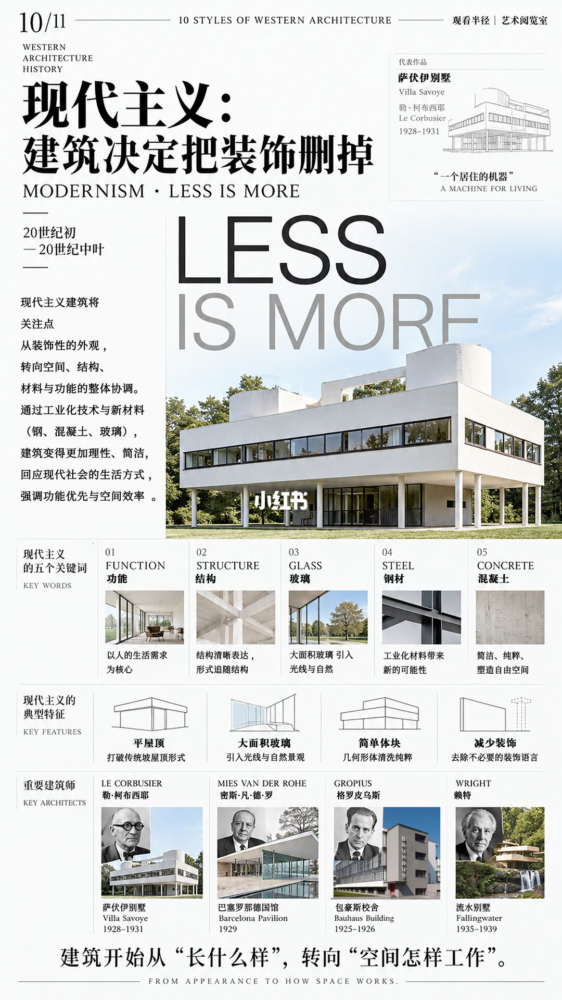
现代主义：把装饰删掉
标题是「现代主义：建筑决定把装饰删掉」，副题 MODERNISM · LESS IS MORE，年代写成 20 世纪初到 20 世纪中叶。封面只写「20 世纪」，这一页把范围收窄了。正文：关注点从装饰性外观转到空间、结构、材料与功能的整体协调。依靠工业化技术和钢、混凝土、玻璃，建筑更理性、简洁，强调功能优先与空间效率。代表作萨伏伊别墅，勒·柯布西耶，1928–1931，引文「一个居住的机器」。主图是架在细柱上的白色方盒子，背后大字 LESS IS MORE。页底：「建筑开始从长什么样，转向空间怎样工作。」英文 FROM APPEARANCE TO HOW SPACE WORKS。页码 10/11。
五个关键词：功能，以人的生活需求为核心；结构，结构清晰表达，并写形式追随结构；玻璃，大面积玻璃引入光线与自然；钢材，工业化材料带来新的可能性；混凝土，简洁、纯粹、塑造自由空间。四张示意：平屋顶，打破传统坡屋顶；大面积玻璃；减少装饰，去除不必要的装饰语言。还有一项讲几何体块干净纯粹，标题用字在画面描述里读成「简单块块」「几何形体清洗纯粹」，确切用字无法确认。四位建筑师：勒·柯布西耶，萨伏伊别墅，1928–1931；密斯·凡·德·罗，巴塞罗那德国馆，1929；格罗皮乌斯，包豪斯校舍，1925–1926；赖特，流水别墅，1935–1939。流水别墅贴着山崖和瀑布，和第 10 页「简单方盒子」的主图不是同一种形体，它被放在建筑师名单里，不是放在「删掉一切场地关系」的定义里。
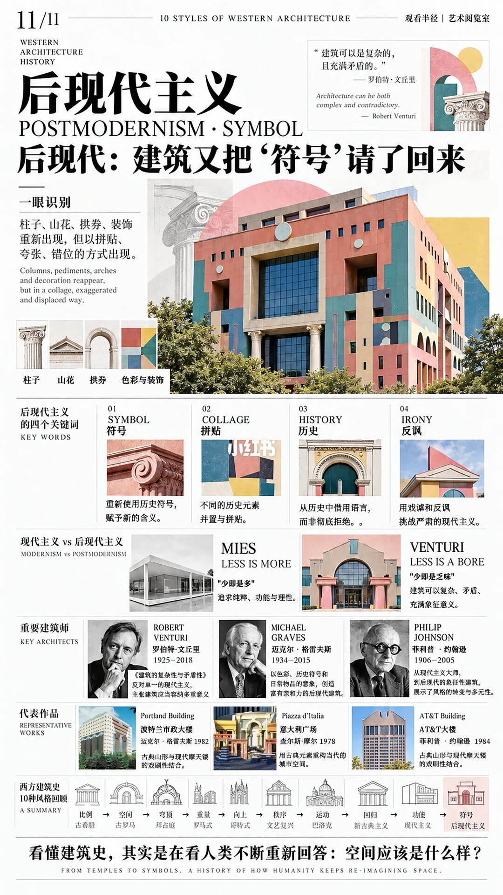
后现代：又把符号请了回来
标题 POSTMODERNISM · SYMBOL，副题「后现代：建筑又把符号请了回来。」引用罗伯特·文丘里：「建筑可以是复杂的，且充满矛盾的。」一眼识别：柱子、山花、拱券、装饰重新出现，但是以拼贴、夸张、错位的方式出现。主图是波特兰市政大楼的彩色装饰立面。页码 11/11。
四个关键词：符号，重新使用历史符号并赋予新的含义；拼贴，不同历史元素并置；历史，从历史中借用语言，而不是彻底拒绝；讽刺，用戏谑挑战严肃的现代主义。对照：密斯「LESS IS MORE」，追求纯粹、功能与理性；文丘里「LESS IS A BORE」，认为建筑可以复杂、矛盾、充满象征，配图是母亲住宅的断裂山花。
三位建筑师：罗伯特·文丘里（1925–2018），著有《建筑的复杂性与矛盾性》，反对单一现代主义，主张多重意义；迈克尔·格雷夫斯（1934–2015），用色彩、历史符号和日常物品意象制造亲和力；菲利普·约翰逊（1906–2005），从现代主义转向后现代的象征性建筑。三件作品：波特兰市政大楼，迈克尔·格雷夫斯，1982，古典山形与现代摩天楼的结合；意大利广场，查尔斯·摩尔，1978，用古典元素重构当代城市空间；AT&T 大楼，菲利普·约翰逊，1984，顶部是齐本德尔式山花。页末回顾十条：古希腊比例，古罗马空间，拜占庭穹顶，第四项是重量，哥特式向上，文艺复兴秩序，巴洛克运动，新古典主义回归，现代主义功能，后现代主义符号。第四项在这一页的画面描述里写成「罗马式」，第 5 页标题是「罗曼式」，两页用字是否一致无法确认，关键词「重量」则和第 5 页相同。结语：「看懂建筑史，其实是在看人类不断重新回答：空间应该是什么样？」英文 FROM TEMPLES TO SYMBOLS. A HISTORY OF HOW HUMANITY KEEPS RE-IMAGINING SPACE.
空间被反复重答，认法却各看一处
结论：一次看懂，靠的是每页只抓一个问题。第 2 页问柱式和比例，第 3 页问拱券、穹顶和混凝土能不能造出内部空间，第 4 页问这块空间有没有精神中心，第 5 页问重量，第 6 页问能不能向上并把光放进来，第 7 页问秩序是否回到人的尺度，第 8 页问空间会不会表演，第 9 页问古典语言是否被收成克制的公共权威，第 10 页问装饰拿掉之后空间怎样工作，第 11 页问历史符号能不能以讽刺和拼贴重新出现。第 11 页的十条关键词把这条线说完：比例、空间、穹顶、重量、向上、秩序、运动、回归、功能、符号。
依据来自第 1 页的顺序和年代，第 2–10 页各自的标题、特征和案例，以及第 11 页的回顾条和最后那句「空间应该是什么样」。罗曼式与哥特式的对照同时写在第 5、6 页；文艺复兴与巴洛克的对照写在第 8 页；密斯和文丘里的对照写在第 11 页。封面模型只帮助记顺序，认法以分风格页为准。
边界：这是十条代表风格的认读卡，不是西方建筑全史。拜占庭和哥特式之间、巴洛克和新古典之间，图上没有展开其他地区和其他风格。年代有两处对不齐：哥特式第 1 页写到 16 世纪、第 6 页写 12–15 世纪；现代主义第 1 页写整个 20 世纪、第 10 页写到世纪中叶。佛罗伦萨大教堂的 1296 年早于文艺复兴标签的 14 世纪。第 5 页山坡教堂的中文名、第 7 页穹顶剖面里「圆形楼座」的确切用字、第 10 页几何体块那一条的标题用字、第 11 页第四项写「罗曼式」还是「罗马式」，无法确认。金句里的「天堂」「舞台」「居住的机器」是海报的比喻，不能当成建筑类型的定义。